1999.01.29 河内スタヂオ録音
Opening Concert
こけら落としコンサート宮之上貴昭 & Smokin' / 吉岡秀晃 / 小笠原千秋 / 金子亜里紗 ほか
Recording Report
レコーディングレポート
河内スタヂオ に遊びに来た人たち 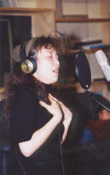

1999年, 1/28～1/3１ 小笠原千秋 こけら落としの２日前に大潟村にやってきました。
昼間は“ポルダー潟の湯”（大潟村の温泉）に毎日３～４時間入りお肌はピカピカ、つるつる。
その合間には、ピアノの弾き語り＋vocalの多重録音をして遊びました。
遊びとはいえ、河内スタチ゛オで初めての、プロのミュージシャンを迎えての初めての録音でした。
スタジオもミュージシャンが来なければ機材もただの飾りです。
河内スタヂオが 本当にスタジオとして活動し始めました。
1999年1/29 こけら落としコンサート
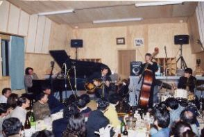
kokera-all 記念すべき、こけら落としコンサートです。
宮之上貴昭＆Smokin’＋吉岡秀晃＋小笠原千秋さんたちがスタジオオープンを祝い東京から駆けつけてくれました。
皆さん古くからの友人たちです。
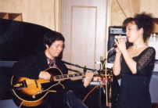
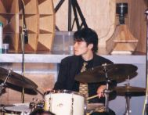
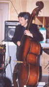
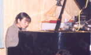
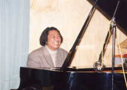
miya-chiaki kudeyuzoarisa yosioka-s豪華メンバー（画像左上より） 宮之上貴昭(g)、小笠原千秋(vo),久手徹太郎(ds.)、山口雄三(b),金子亜里沙(p), 吉岡秀晃(p)、＋ 河内家一世一代の大イベントです。
スタジオ・オープンを祝い１本１０万円の大吟醸日本酒（瀬川先生ありがとう）の乾杯で始まりました。６時からのライブは１部、２部、３部と大まかには分かれていましたが、入れ替わり立ち替わりミュージシャンが交代してバラエティあふれる,スリリングで魅力的なステージでした。
Miya&Chiaki, 吉岡&亜里砂のピアノ連弾 普段見れない演奏が盛りだくさんでした。
演奏が終わったのは１１時頃でしたが、お客様は誰１人帰ろうとしなくて、最高に楽しいコンサートでした。
演奏終了後はジャム・セッション で楽しみました。（宮之上さん(ds)、吉岡さん(b), 雄三さん（ｇ）トリオもありました。 宴はえんえん朝の５時まで続きました。
1999年１/30～2/2 金子亜里砂トリオ+宮之上貴昭 レコーディング
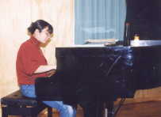
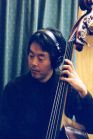
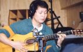
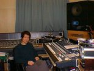
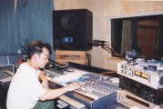
arisa-rec yuzo-recmiya-rec 吉岡さんは帰京し、残りのメンバー＋宮之上貴昭（ゲスト）のよるレコーディング。 mymkmixing ↑ジャージ姿のプロデューサーとエンジニアがいるリラックスしたスタジオ（千秋曰く）ですが、前日のこけらおとしとは違い緊張感でいっぱいでした。
1999年2/3～2/7 宮之上貴昭 Me,Myself and I レコーディング
←レコーディングの様子はここをクリック